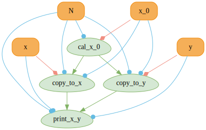

MUDA Tutorial
When some demo implemented in CUDA works pretty well, you wish to turn it into a real engineering project quickly. But you will find that it is a disaster to use CUDA directly:
- Extremely low readability, the c-like APIs bury you in the insignificant details.
- Extremely high mental burden, without boundary checks, every operation that across the boundary comes with extremely high cost. CUDA Error Codes are useless.
Now you have some other options:
The enormousness is the only drawback.
Or taichi?
It is suitable for demos, but you may have to rewrite everything in CPP at some point when you want to turn it into a real engineering project.
Or LuisaCompute?
The developers of LuisaCompute mainly work on rendering. So it would be a great option if your goal aligns with theirs. But if you are pursuing simulation and lives in CUDA ecosystem, LuisaCompute may not be the best choice, because its RHI layer isolates the backends(DirectX, CUDA, Vulkan, Metal) and the runtime. If you want to use CUDA functionalities quickly, you may very likely need to implement the corresponding extension yourself. I personally find it time-consuming and labour-intensive after participating the development of LuisaCompute CUDA CUB Extension and Tensor Extension.
How do other huge projects use CUDA? Actually, Zeno and Blender make a layer of abstraction over CUDA more or less. All reach some consensus:
- Use lambda expressions provided by nvcc to encapsulate kernel launches.
- Provide the visitors of device memory, naming proxy or view, and initialize these visitors in the capture lists of lambda expressions.
With these two encapsulations, many security checks can be included naturally.
Back to the previous question, if you want to use CUDA elegantly without importing a huge codebase, MUDA may be a great option.
What is MUDA?
MUDA is μ-cuda，aiming to solve the last problem of the CUDA programming:
- Header only library, works out of the box.
- Depends on CUDA and standard library.
- Improve the readability, maintainability, security and debugging efficiency of the CUDA code.
- Improve the degree of automation by simplifying the construction of CUDA graphs.
- ...
Examples：
- Once there's a operation across the boundary of the memory, MUDA tells the user the exact container/kernel/block/thread where the operation happens and terminate the program.
- When using MUDA compute graph, the dependencies of CUDA graph nodes are formed automatically and the parameters of the node are updated automatically. Users can switch between graph launch and kernel launch seamlessly.
- Kernel launch in MUDA provides enough information for user to perform operations such as reducing and scanning inside the kernel securely.
In the next section, we will introduce the basic usage of MUDA.
Getting Started
#include <muda/muda.h>
using namespace muda;
int main()
{
Launch(1, 1)
.apply(
[] __device__()
{
print("hello muda!\n");
})
.wait();
return 0;
}
This example introduce Launcher, one of the important concept in MUDA. Launch is the simplest launcher, with similar configuration with CUDA, except that the parameters previously inside <<<>>> are moved into the constructor of Launch. <<<>>> makes it hard for developing cause intellisense cannot recognize it, resulting in massive false information that hides the true errors.
The invocation of kernel starts from apply. Kernels in MUDA require the types of the objects passed in to be __device__ callable object.
Inside MUDA, user defined callable objects will be invoked by some __global__ functions. All user defined kernels are executed by MUDA kernels. After calling apply, we call wait to wait for the current CUDA stream.
In this example, we showcase a pattern of method chaining, similar to Reactive Programming, such as :
Reactive Programming is proven to be suitable for async programming. The lack of knowledge on Reactive Programming doesn't hinder you from using MUDA.
Callable Object Launch: Invoking __device__ callable object through __global__ kernels.
Remember VectorAdd in CUDA Samples?
It computes the sum of two vectors on the device. Let's implement the same thing with MUDA.
#include <muda/muda.h>
#include <muda/container.h>
using namespace muda;
int main()
{
constexpr int N = 1024;
HostVector<float> hA(N), hB(N),hC(N);
DeviceVector<float> dA(N), dB(N), dC(N);
// initialize A and B using random numbers
auto rand = [] { return std::rand() / (float)RAND_MAX; };
std::generate(hA.begin(), hA.end(), rand);
std::generate(hB.begin(), hB.end(), rand);
// copy A and B to device
dA = hA;
dB = hB;
int threadsPerBlock = 256;
int blocksPerGrid = (N + threadsPerBlock - 1) / threadsPerBlock;
Launch(blocksPerGrid, threadsPerBlock)
.apply([dC = dC.viewer(), // | this is a capture list |
dA = dA.cviewer(), // | map from device_vector to a viewer |
dB = dB.cviewer()] // | which is the most muda-style part! |
__device__() mutable // place "mutable" to make dC modifiable
{
int i = blockDim.x * blockIdx.x + threadIdx.x;
if(i < N)
dC(i) = dA(i) + dB(i);
})
.wait(); // wait the kernel to finish
// copy C back to host
hC = dC;
}
Compared to Hello MUDA, we capture viewer(Read Write Viewer) and cviewer(Read Only Viewer). Viewer is the second important concept in MUDA.
Definition: MUDA-viewer is a family of observer of memory, providing a method to access the memory without owning it.
MUDA Viewer has the following traits:
- trivial copyable: there is no side-effect of copying viewers on the host, on the device or between host and device.
- mapping: viewer converts logical index to memory offset.
- checking: viewer checks the boundary when processing logical index, avoiding out-of-bounds behaviors and null pointer accesses.
The code above is not elegant enough, in which the logic of parallel codes interweave with the parameters of the kernels, making the code obscure and less readable. In fact, this kind of operations are pretty common so there is a new Launcher ParallelFor in MUDA for this.
Let's change Launch related code to ParallelFor.
#include <muda/muda.h>
#include <muda/container.h>
using namespace muda;
int main()
{
constexpr int N = 1024;
HostVector<float> hA(N), hB(N),hC(N);
DeviceVector<float> dA(N), dB(N), dC(N);
// initialize A and B using random numbers
auto rand = [] { return std::rand() / (float)RAND_MAX; };
std::generate(hA.begin(), hA.end(), rand);
std::generate(hB.begin(), hB.end(), rand);
// copy A and B to device
dA = hA;
dB = hB;
// block size = 256
ParallelFor(256)
.apply(N,
[dC = dC.viewer(), // | this is a capture list |
dA = dA.cviewer(), // | map from device_vector to a viewer |
dB = dB.cviewer()] // | which is the most muda-style part! |
__device__(int i) mutable // place "mutable" to make dC modifiable
{
// safe parallel for will cover the rang [0, N)
// i just goes from 0 to N-1
dC(i) = dA(i) + dB(i);
})
.wait(); // wait the kernel to finish
// copy C back to host
hC = dC;
}
It is easy to find that we didn't compute gridDim ourselves, because ParallelFor does this for us. The only thing we need to care about is the total number N. And in the kernel, we don't check the upper bound of iteration, which is also done by PallelFor.
What if we want to use fixed gridDim and blockDim? Just specify them and ParallelFor will run in grid stride loop. The code code is unchanged.
ParallelFor(32 /*gridDim*/, 64 /*blockDim*/)
.apply(N,
[dC = dC.viewer(), // | this is a capture list |
dA = dA.cviewer(), // | map from device_vector to a viewer |
dB = dB.cviewer()] // | which is the most muda-style part! |
__device__(int i) mutable // place "mutable" to make dC modifiable
{
// safe parallel for will cover the rang [0, N)
// i just goes from 0 to N-1
dC(i) = dA(i) + dB(i);
})
.wait(); // wait the kernel to finish
warp and reduce safely in the kernel. You can get all of them like this.
ParallelFor(256)
.apply(N,
[] __device__(const ParallelForDetails& details) mutable
{
// DynamicBlocks or GridStrideLoop
auto parallel_for_type = details.parallel_for_type();
auto i = details.i();
auto is_final_block = details.is_final_block();
auto active_num_in_block = details.active_num_in_block();
auto total_num = details.total_num();
// for grid stride loop
auto batch_i = details.batch_i();
auto total_batch = details.total_batch();
})
.wait();
Replacing int i with const ParallelForDetail& details to get all details about ParallelFor, active_num_in_block for example, which helps the user to avoid undefined behavior by identifying the current active thread, when doing block reduce or warp reduce.
Next, let's across the boundary:
ParallelFor(256)
.apply(N,
[dC = dC.viewer(), // | this is a capture list |
dA = dA.cviewer(), // | map from device_vector to a viewer |
dB = dB.cviewer()] // | which is the most muda-style part! |
__device__(int i) mutable // place "mutable" to make dC modifiable
{
dC(i+1) = dA(i) + dB(i);
})
.wait(); // wait the kernel to finish
Output:
We will find that we across the boundary atblockIdx=3, threadIdx=255, since the index 1024 exceeds the size of the viewer. But we still don't know which viewer across the boundary.
Let's modify the code a bit:
ParallelFor(256)
.kernel_name("vector_add")
.apply(N,
[dC = dC.viewer().name("dC"), // | this is a capture list |
dA = dA.cviewer().name("dA"), // | map from device_vector to a viewer |
dB = dB.cviewer().name("dB")] // | which is the most muda-style part! |
__device__(int i) mutable // place "mutable" to make dC modifiable
{
dC(i + 1) = dA(i) + dB(i);
})
.wait(); // wait the kernel to finish
Now we can pinpoint the error after adding the kernel name and viewer name.
Output：
MUDA provides syntax sugar to name the viewer in muda/syntax_sugar.h. To avoid macro collision, do not include muda/syntax_sugar.h in headers.
is equivalent to
Buffer and BufferView
In addition to DeviceVector derived from thrust::device_vector, MUDA provides a light weight container, DeviceBuffer<T> for memory and DeviceVar<T> for variable on device.
For DeviceBuffer, we have the following operations:
// device-device copy
DeviceBuffer& operator=(const DeviceBuffer<T>& other);
// device-device copy
DeviceBuffer& operator=(BufferView<T> other);
// copy from host
DeviceBuffer& operator=(const std::vector<T>& other);
// copy to host
void copy_to(T* host) const;
// copy to host
void copy_to(std::vector<T>& host) const;
void resize(size_t new_size);
void resize(size_t new_size, const T& value);
void clear();
void shrink_to_fit();
void fill(const T& v);
For DeviceVar, we have the following operations:
// device-device copy
DeviceVar& operator=(const DeviceVar<T>& other);
// device-device copy
DeviceVar& operator=(VarView<T> other);
// copy from host
DeviceVar& operator=(const T& val);
// copy to host
operator T() const;
All functions mentioned above run on default streams and block the main thread, meaning that the function synchronize with the main thread before returning.
Async version of these functions should be used with BufferLaunch, another Launcher.
For example, we can use the following to copy data.
Stream s;
std::vector<int> h_buffer{5};
DeviceBuffer<int> d_buffer{10};
BufferLaunch(s)
.copy(d_buffer.view(0/*offset*/,5/*size*/), h_buffer.data())
.wait();
In the above example, BufferLaunch copies data in h_buffer to d_buffer[0, ).
Note that BufferLaunch will not block the main thread and synchronize with the main thread when user invoke wait(). Of course, some operation may still block the main thread because cudaMallocAsync doesn't exist in early version of CUDA and MUDA replace it with cudaMalloc.
Furthermore, large proportion of interfaces in BufferLaunch operate on BufferView instead of DeviceBuffer. Cause these interfaces only copy or initialize the data, they don't allocate or free memory. BufferView records only the memory address of the original DeviceBuffer, i.e., the size of the offset of the original buffer, which is used by BufferLaunch to determine the range of the operation. MUDA also provides the transformation from DeviceVector to BufferView. The interaction between DeviceBuffer and DeviceVector builds upon the BufferView. VarView works in a similar way.
If user have their own containers, they can use BufferLaunch through BufferView and VarView.
// device <- device
template <typename T>
BufferLaunch& copy(BufferView<T> dst, const BufferView<T>& src);
// host <- device
template <typename T>
BufferLaunch& copy(T* dst, const BufferView<T>& src);
// device <- host
template <typename T>
BufferLaunch& copy(BufferView<T> dst, const T* src);
// device <- device
template <typename T>
BufferLaunch& copy(VarView<T> dst, const VarView<T>& src);
// host <- device
template <typename T>
BufferLaunch& copy(T* dst, const VarView<T>& src);
// device <- host
template <typename T>
BufferLaunch& copy(VarView<T> dst, const T* src);
// device <- host
template <typename T>
BufferLaunch& fill(BufferView<T> buffer, const T& val);
// device <- host
template <typename T>
BufferLaunch& fill(VarView<T> buffer, const T& val);
All the operations above will not block the main thread, so the user should invoke .wait() to synchronize with the main thread.
MUDA Compute Graph
Next, we will introduce the MUDA Compute Graph. We will focus on the usage and its meaning for engineering here. Please refer to this tutorial for its implementation details.
For completeness of this tutorial, we will repeat part of the content of the above tutorial.
void compute_graph_simple()
{
ComputeGraphVarManager manager;
ComputeGraph graph{manager};
// 1) Define GraphVar
auto& N = manager.create_var<size_t>("N");
// BufferView represents a fixed memory
// GraphVar doesn't support dynamic memory including DeviceVector, DeviceBuffer and so on.
auto& x_0 = manager.create_var<BufferView<Vector3>>("x_0");
auto& x = manager.create_var<BufferView<Vector3>>("x");
auto& y = manager.create_var<BufferView<Vector3>>("y");
// 2) Create GraphNode
graph.create_node("cal_x_0") << [&]
{
//Initialization
ParallelFor(256).apply(N.eval(),
[x_0 = x_0.eval().viewer()] __device__(int i) mutable
{ x_0(i) = Vector3::Ones(); });
};
graph.create_node("copy_to_x") // copy
<< [&] { BufferLaunch().copy(x.eval(), x_0.ceval()); };
graph.create_node("copy_to_y") // copy
<< [&] { BufferLaunch().copy(y.eval(), x_0.ceval()); };
graph.create_node("print_x_y") << [&]
{
// print
ParallelFor(256).apply(N.eval(),
[x = x.ceval().cviewer(),
y = y.ceval().cviewer(),
N = N.eval()] __device__(int i) mutable
{
if(N <= 10)
print("[%d] x = (%f,%f,%f) y = (%f,%f,%f) \n",
i,
x(i).x(),
x(i).y(),
x(i).z(),
y(i).x(),
y(i).y(),
y(i).z());
});
};
// 3) Visualize dependency graph using graphviz (Optional)
graph.graphviz(std::cout);
}
The generated graphviz code can be viewed on Graphviz Online:

In the image we find that copy_to_x and copy_to_y both depends on cal_x_0, which is expected. It is because x_0 is initialized first and then copied to x and y. The execution of copy_to_x and copy_to_y are fully paralleled since they read x_0 only and they do not depend on each other. Then print_x_y depends on copy_to_x and copy_to_y because the writing of x and y should be finished before printing.
Besides the nodes, we visualize the reads(red) and writes(blue) of graph vars by every graph node.
Then we are invoking the compute graph.
void compute_graph_simple()
{
...
graph.graphviz(std::cout);
// Alloc resources
auto N_value = 4;
auto x_0_buffer = DeviceBuffer<Vector3>(N_value);
auto x_buffer = DeviceBuffer<Vector3>(N_value);
auto y_buffer = DeviceBuffer<Vector3>(N_value);
// Update graph var
// Use update() to pass resources since we just defined the resources before.
N.update(N_value);
// Pass DeviceBuffer to update GraphVar directly since DeviceBuffer converts to BufferView implicitly.
x_0.update(x_0_buffer);
x.update(x_buffer);
y.update(y_buffer);
// Launch Graph
graph.launch();
// Or invoke all Kernels synchronously without cudaGraph
// graph.launch(true);
}
The output is:
[0] x = (1.000000,1.000000,1.000000) y = (1.000000,1.000000,1.000000)
[1] x = (1.000000,1.000000,1.000000) y = (1.000000,1.000000,1.000000)
[2] x = (1.000000,1.000000,1.000000) y = (1.000000,1.000000,1.000000)
[3] x = (1.000000,1.000000,1.000000) y = (1.000000,1.000000,1.000000)
When using graph.launch(), the graph will synchronize on the default stream, meaning that the graph will wait for every tasks on the default stream and the subsequent tasks after this graph will wait for current graph to complete.
graph.launch(stream) means that the graph will synchronize on this stream.
In addition, we can use graph.launch(single_stream=true, stream). When setting single_stream to true, all nodes will be invoked synchronously on the stream following the order of graph.create_node, other than using the cuda graph. This is helpful for debugging and profiling. In theory, the results of all the above launch methods will be the same without float number problems.
Engineering Practices
MUDA compute graph decouples the memory and computation, and it supports the automatic generation of the dependencies and the automatic update of the nodes. The design of the ComputeGraphVarManager allows us to store a Manager and several ComputeGraph globally. All compute graphs will receive notifications every time we update a GraphVar somewhere in the system, so that the related nodes will be updated before the execution of the ComputeGraph.
For a huge system, we can utilize the ComputeGraphVarManager to construct ComputeGraph and update resources in anywhere of the system freely:
- Users are agnostic on the
ComputeGraphwhen updating the resources. - Users are agnostic on the resources when constructing and using the
ComputeGraph.
Note: Previously created GraphVar can be fetched by find_var.